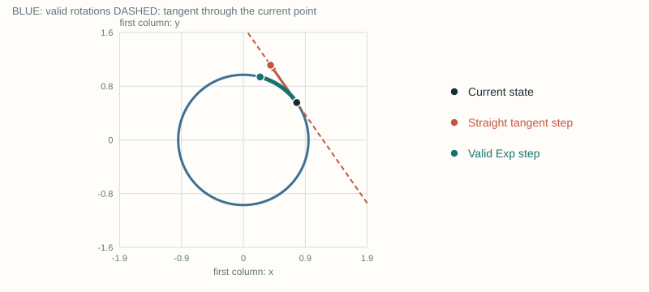
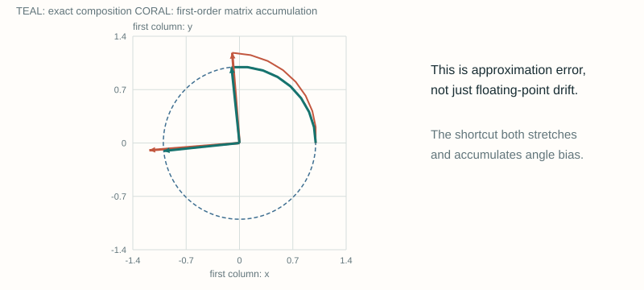
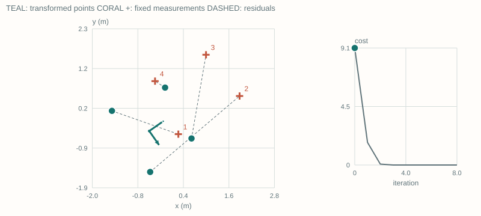
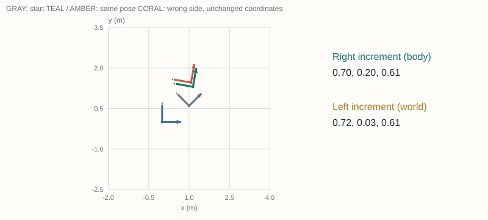
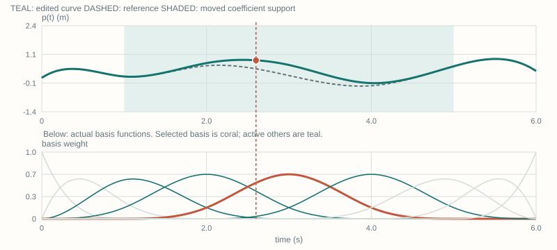
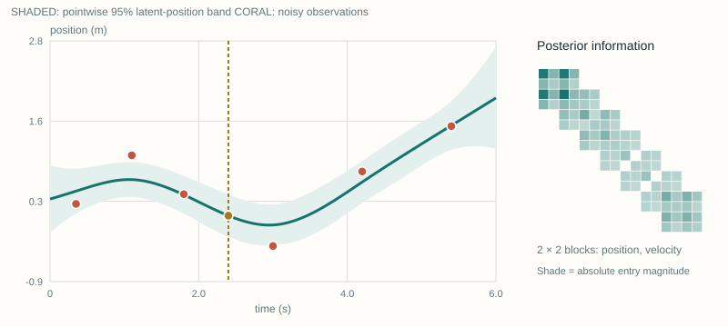
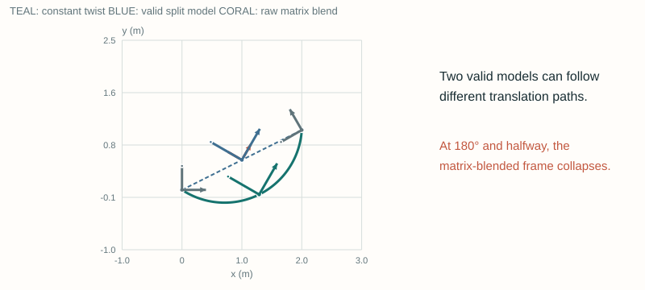

Advanced State Variable Representations
A worked companion to the slides: geometry first, time second, then the connection. Updated September 5, 2026.
1 / 43
Valid states. Meaningful motion. Understandable inference.
Two different modeling choices: where the state lives, and how it changes with time.
How do we change a pose without breaking it?
Start with a circle. Build Exp and Log, a working optimizer, and a frame-consistent adjoint.
How do we represent motion between measurements?
Compare local spline bases with stochastic motion priors. Inspect smoothness and uncertainty separately.
Can the equations explain what the demo does?
Seven embedded laboratories, numeric checks, worked notes, and equation sheets.
Explanation and assumptions
This lesson expands the original overview into a sequence of small derivations. Read the geometry section first unless you already know right perturbations on SE(3). Read the time section second. The laboratory controls are embedded in the slides; no separate launch is needed. Read Notes opens a scrollable companion containing every equation, the default diagrams, and these explanations. All demonstrations are deliberately small, deterministic teaching examples, not performance benchmarks.
Sources: SLAM Handbook · Ch. 2 · Open this slide
2 / 43
Two questions that should not be mixed together.
Geometry is not a time model. A time model does not automatically preserve geometry.
A spatial rotation has nine stored matrix entries but three degrees of freedom. Arbitrary entrywise increments need not be rotations.
The representation must keep the optimizer inside the valid state space.
A sensor measurement has its own time \(t_i\). A trajectory model supplies the pose there; \(\mathcal M\) denotes the map.
Its temporal assumptions determine interpolation, derivatives, and uncertainty.
Explanation and assumptions
A robot can use a perfectly valid SO(3) rotation at every stored timestamp and still have an inappropriate interpolation model between timestamps. Conversely, a smooth polynomial in matrix entries can leave the rotation group. We therefore separate geometric representation from temporal representation, then combine them near the end. The displayed measurement function is a generic conceptual model, not a claim that every sensor has the same residual.
Sources: SLAM Handbook · Ch. 2 · Open this slide
3 / 43
Fix the convention once, then keep it everywhere.
All vectors are columns. Angles inside the equations are in radians.
Translation comes first. A right increment uses body/local coordinates.
\(\Sigma\): covariance of local state coordinates.
\(Q_c\): continuous-time process spectral density.
\(Q_k\): discrete process covariance.
\(R_i\): measurement covariance (not a rotation here).
\(\|e\|_W^2=e^{\mathsf T}We\): weighted squared norm.
Spline degree \(d\), order \(d+1\). Control coefficients and knots are different objects.
Explanation and assumptions
The pose maps coordinates from body B into world W. Thus multiplying an increment on the right means that the increment is expressed relative to the current body frame. Multiplying on the left means world-frame coordinates, after the proper adjoint conversion. A translation-first twist is required for the particular SE(3) wedge and adjoint matrices later in the lesson. The same letter R is commonly used for rotations and measurement covariances, so each equation states which one it means. Noise spectral density and finite-interval covariance have different units.
Sources: Solà et al. · Micro Lie theory · Barfoot et al. · RSS 2014 · Open this slide
4 / 43
A group is a set of valid states with composition.
Matrix size is a storage choice; dimension is the number of independent local coordinates.
One angle determines the entire matrix.
\(R(a)R(b)=R(a+b)\)
Rotation composition is generally not commutative.
A unit quaternion stores four constrained numbers for the same three freedoms.
The translation of the second motion must first be rotated.
Explanation and assumptions
SO means special orthogonal: orthogonality plus determinant +1 excludes reflections. SE means special Euclidean: rotations combined with translations. The identity, inverse, and product remain in the same set. SO(2) is the best entry point because its first column lies exactly on a unit circle. That drawing does not identify SO(3) with a sphere. In 3D the order of finite rotations matters.
Sources: Solà et al. · Micro Lie theory · Open this slide
5 / 43
A tangent must touch the state it describes.
Use SO(2) to make the geometry exact rather than suggestive.
The tangent direction is perpendicular to the radius: \(p^{\mathsf T}v=0\).
For a nonzero step, the straight endpoint is off the circle.
\[p^+=p(\theta+\delta),\qquad\|p^+\|=1\]The next figure draws the actual tangent through the actual current point.
Explanation and assumptions
Differentiate the two coordinates of p with respect to theta. Their dot product is cos(theta)(-sin(theta)) + sin(theta)cos(theta) = 0. Since both p and v have unit norm, expanding the squared norm of p + delta v gives 1 + delta squared. This proves exactly why the tangent step is only a local approximation. The circle is an exact representation of SO(2) through the first column of its rotation matrix. A generic manifold may use a retraction other than the Lie exponential.
Sources: Solà et al. · Micro Lie theory · Open this slide
6 / 43
See the difference between a tangent step and a group update.
The tangent line, current point, and updated point are computed—not hand-positioned.
Change the starting angle. Then increase the increment. Check which endpoint stays on the blue circle.
Default-state snapshot
Change the increment. The straight tangent step leaves the circle; the exponential follows the circle. The diagram is SO(2), not a picture of SO(3).

Explanation and assumptions
At the default increment 0.7 rad, the linear endpoint has norm sqrt(1.49), approximately 1.221, while the exponential endpoint has norm one. At zero increment the two endpoints coincide. Changing the current angle moves the tangent line along with the point. The two operations agree to first order in the increment, but not for a finite step.
Sources: Solà et al. · Micro Lie theory · Open this slide
7 / 43
Wedge changes representation. Exp changes the state space.
Do not treat all four maps as interchangeable.
\([\phi]_\times a=\phi\times a\). The wedge map makes a skew matrix; vee reverses this representation.
\[\operatorname{Exp}(\phi)=\exp(\phi^\wedge)\]Log requires a branch. Exponential coordinates are not globally unique.
For SO(3), the principal rotation angle is at most \(\pi\). The axis is ambiguous at \(\pi\).
Explanation and assumptions
Lowercase exp and log act on matrices. Capital Exp and Log include wedge and vee so their arguments or outputs are minimal vectors. The identity log branch works near the current estimate, not as a globally unique coordinate chart for every possible rotation. The local difference matches the right-update convention: bar R Exp(delta) = R implies delta = Log(bar R transpose R), within a consistent branch.
Sources: Solà et al. · Micro Lie theory · Open this slide
8 / 43
Rodrigues’ formula constructs a valid 3D rotation.
A closed form replaces an infinite matrix-exponential series.
Direction gives the rotation axis; norm gives its angle.
Near zero, use stable series rather than subtracting nearly equal numbers.
The finite first-order shortcut \(I+A\) is generally not orthogonal.
Exact algebraic identities still have ordinary floating-point error in a numerical implementation.
Explanation and assumptions
The skew matrix satisfies A cubed = -alpha squared A, which reduces the exponential series to a combination of I, A, and A squared. This yields Rodrigues’ formula. The limiting values define the formula continuously at zero. The tests check orthogonality and the SE(3) constructions at small, moderate, and near-pi angles; they do not confuse exact mathematical preservation with literally zero floating-point error.
Sources: Solà et al. · Micro Lie theory · Open this slide
9 / 43
An SE(3) exponential does not simply copy the translation.
Rotation and translation are coupled in a finite rigid-body increment.
The resulting translation is \(J_l(\phi)\rho\), not generally \(\rho\).
Here \(\alpha=\|\phi\|\). At zero, \(J_l(0)=I\).
The name “left Jacobian” describes this differential map. It does not force the pose update to be on the left.
Explanation and assumptions
Integrating a constant body twist while the body rotates produces a curved world-frame translation. The matrix exponential encodes that coupling. Pure translation, phi = 0, is the special case where the translational coordinate equals the resulting displacement. The appearance of J_l in the SE(3) closed form is compatible with our right composition T Exp(xi). Which side the update uses and which differential map occurs inside the closed form are separate concepts.
Sources: Solà et al. · Micro Lie theory · Open this slide
10 / 43
A plausible arrow is not enough to validate a rotation.
Check both orthogonality and determinant after repeated updates.
This is an exact group identity.
Length scales by \((1+\delta^2)^{n/2}\). The unwrapped angle is \(n\arctan\delta\), not \(n\delta\).
Explanation and assumptions
One shortcut matrix has orthogonal but non-unit columns, each of length sqrt(1 + delta squared). Its determinant is 1 + delta squared. Repeating it multiplies the scale each time. Normalizing the result could remove scale in this special planar example, but it would not remove the accumulated angular bias. The next lab visualizes both effects and distinguishes approximation error from machine precision.
Sources: Solà et al. · Micro Lie theory · Open this slide
11 / 43
Repeat the update. Inspect the constraints.
The two colored coordinate frames use the same physical plot scale.
Increase the number of updates. Then reduce the increment and compare determinant, orthogonality error, and angle bias.
Default-state snapshot
Use smaller steps or more updates. Each shortcut multiplies length by sqrt(1 + delta²); exact group composition preserves a unit orthonormal frame.

Explanation and assumptions
The exact and shortcut trajectories start at the identity. Both basis columns are drawn, so the diagram can reveal scale and non-orthogonality rather than only a heading. For this particular Euler shortcut the columns remain perpendicular but become too long; the Frobenius orthogonality error measures this failure of unit length. The observed behavior is derived on the previous slide.
Sources: Solà et al. · Micro Lie theory · Open this slide
12 / 43
Linearize the residual in the coordinates you will update.
Worked example: known corresponding body points and world measurements.
This follows from \(T^+=T\operatorname{Exp}(\xi)\).
In 2D, the last column is \(RJ a_i\), where \(J=\left[\begin{smallmatrix}0&-1\\1&0\end{smallmatrix}\right]\).
Stack residuals and Jacobians. \(W\) is the precision; \(0<\beta\le1\) is a line-search step.
The demo uses equal weights, a tiny diagonal damping term, and backtracking. Correspondences do not change.
Explanation and assumptions
Expand Exp(xi) to first order inside the right update. A body point becomes R(a_i + rho + phi cross a_i) + t. Because phi cross a_i = -[a_i]_cross phi, the 3D Jacobian is [R, -R[a_i]_cross]. In 2D phi is a scalar and the angular column is R J a_i. We define residual as prediction minus measurement, so the normal-equation right-hand side has a minus sign. The numerical test perturbs the pose on the same side when checking this derivative.
Sources: Solà et al. · Micro Lie theory · Open this slide
13 / 43
Watch a tangent-space optimizer fit a pose.
Each step recomputes the Jacobian, solves a local problem, and returns a valid pose.
Press “One iteration.” Follow each numbered correspondence. Change the initial angle, then restart the solve.
Default-state snapshot
Step through the solve. Correspondences are fixed; this is pose fitting, not a full SLAM or data-association system. A right tangent update keeps every iterate valid.

Explanation and assumptions
Four non-collinear body points are transformed by the fixed synthetic ground truth: 35 degrees rotation and translation (0.8, 0.5) meters. The initial translation is (-0.5, -0.4). Measurements are noiseless here to make the convergence mechanism easy to inspect. This is a small least-squares example with fixed associations, not a claim that arbitrary nonconvex SLAM problems converge globally. The chart shows half the squared residual norm.
Sources: Solà et al. · Micro Lie theory · Open this slide
14 / 43
The Gaussian lives in local coordinates—not in matrix entries.
A valid state and an adequate uncertainty model are separate requirements.
The random vector has six coordinates. Mapping it to SE(3) produces valid poses.
This is not a globally unique Gaussian distribution on the group.
The reference pose \(\bar T\) is fixed in this conversion.
Broad, wrapped, or multimodal orientation uncertainty needs more than a single convenient local chart.
Explanation and assumptions
The adjoint identity maps each right perturbation to a left perturbation at the same fixed nominal pose. Because that coordinate mapping is linear, its covariance transformation is the standard linear covariance transformation. The resulting group-valued distribution is a pushforward of the local Gaussian; its density with respect to a group volume measure is not simply an unconstrained Gaussian density in the matrix entries. A valid Exp map does not make a single Gaussian a good approximation to multiple separated orientation hypotheses.
Sources: Solà et al. · Micro Lie theory · Open this slide
15 / 43
The adjoint converts the same motion between two sides.
Simply moving an unchanged vector to the other side changes the physical update.
Right: local/body coordinates.
Left: global/world coordinates.
The identity is exact for the paired exponential increments.
A rotation about a translated origin also affects the translational twist coordinates.
Explanation and assumptions
Conjugate the exponential by T: T exp(xi wedge) T inverse = exp(T xi wedge T inverse). Applying vee gives the adjoint. This derivation fixes the sign of the translation cross-product term. In 2D, using translation-first [rho_x, rho_y, omega], the adjoint is [[R, -Jt], [0, 1]]. The demonstration uses that exact planar counterpart and actual coordinate-frame endpoints rather than freehand arrows.
Sources: Solà et al. · Micro Lie theory · Open this slide
16 / 43
Move the pose, then switch the perturbation side.
The teal and amber frames overlap only after transforming the increment.
Change both starting position and rotation. Compare the converted left vector with the original right vector.
Default-state snapshot
Change the starting orientation or translation. A side switch requires the adjoint. Position enters the translational coordinates whenever the increment also rotates.

Explanation and assumptions
The demo applies a body-coordinate increment (0.7 meters, 0.2 meters, delta radians). The correct world-coordinate increment is computed by Ad(T). Both constructions yield the same homogeneous matrix up to floating-point precision. The coral comparison deliberately applies the unconverted vector on the left. All displayed frame axes are generated by transforming local basis vectors; no handedness is invented by the renderer.
Sources: Solà et al. · Micro Lie theory · Open this slide
17 / 43
Left and right Jacobians answer different questions.
State the side before using a symbol called J.
For SO(3), \(J_r(\phi)=J_l(-\phi)\). Both identities are first-order in \(d\).
Use a consistent nonsingular local branch. The order of the factors matters.
Explanation and assumptions
The first pair maps an additive change in exponential coordinates into a small group increment on a chosen side. The second pair is the corresponding local inverse operation. It is incorrect to change the product order but keep an unspecified J unchanged. These are approximations in the small increment d, not exact finite rotation-vector addition rules. The tests compare the two differential identities against finite perturbations in the declared convention.
Sources: Solà et al. · Micro Lie theory · Open this slide
18 / 43
Angular velocity is not generally the rotation-vector derivative.
This is the same left/right distinction in continuous time.
The two angular velocities describe the same motion in different frames.
Invert the appropriate Jacobian to obtain \(\dot\phi\).
Near the identity \(J_l\approx J_r\approx I\), which explains the tempting—but only local—shortcut.
Explanation and assumptions
Differentiate R(t) = Exp(phi(t)) using the previous slide over a small time dt. The induced left increment is J_l(phi) phi_dot dt, which is the spatial angular velocity times dt. The right increment gives the body angular velocity. This is important when deriving IMU residuals or placing a stochastic prior on local pose coordinates: a coordinate derivative is not automatically the physical twist.
Sources: Solà et al. · Micro Lie theory · Open this slide
19 / 43
One trajectory function can serve many sensor clocks.
Continuous time does not mean an infinite list of optimization variables.
The finite parameter collection \(\vartheta\) can contain spline control poses or GP support states.
Every measurement queries this function at its own timestamp.
For rolling shutter: use each row time.
For spinning lidar: use each point time.
For radio: use the relevant acquisition time.
A smooth trajectory does not by itself fix a wrong sensor model, clock offset, or data association.
Explanation and assumptions
Representation variables, observation times, and output-query times need not coincide. A method can exploit this separation to avoid adding a full pose variable for every high-rate measurement, but it must correctly model how those measurements depend on the support states. This lesson distinguishes an exact all-observation-time GP teaching model from approximate support-only likelihood constructions.
Sources: SLAM Handbook · Ch. 2 · Open this slide
20 / 43
Measurement time ≠ estimation time ≠ query time.
Decoupling is useful, but the interpolation model must still be justified.
The instrument determines \(t_i\).
Do not silently round all observations to the nearest pose timestamp.
A known or estimated clock offset is part of the sensor model.
Choose knots or support times \(\tau_k\).
Denser support increases flexibility and often computational cost.
Not every temporal GP representation stays sparse after every marginalization.
Evaluate at \(t_*\).
Check the mean, derivative, and covariance that the chosen model actually defines.
Interpolation inside the interval is not the same as extrapolation outside it.
Explanation and assumptions
The three time lists answer different engineering questions. Splines often choose regular knots. SDE-derived GPs may use irregular support times. A query does not necessarily add an optimization variable: the conditional distribution can be computed from nearby support states after inference. The demo later uses all observation times in the Markov chain so that the asynchronous likelihood is exact and easy to audit.
Sources: Barfoot et al. · RSS 2014 · Open this slide
21 / 43
A spline is a weighted sum with a local influence pattern.
The unknowns are coefficients; the basis functions are known once the knots are fixed.
Changing \(c_i\) changes the curve only where its basis is nonzero.
At most \(d+1\) bases are active at a time; knots can have fewer.
At simple interior knots, a degree-\(d\) spline has \(C^{d-1}\) continuity. Repeated knots reduce continuity.
Cubic control coefficients are not generally points the curve passes through.
Explanation and assumptions
Knots are the nondecreasing scalar breakpoints u_i. Control coefficients c_i may be scalar positions, vectors, or, after a different construction, group-valued controls. In an ordinary vector spline, the basis itself gives the derivative with respect to each coefficient. For a nonlinear sensor residual, multiply that derivative by the sensor Jacobian. Compact support is the origin of the local factor connectivity.
Sources: SciPy · BSpline definition · SLAM Handbook · Ch. 2 · Open this slide
22 / 43
Cox–de Boor builds the actual basis functions.
Triangles are appropriate for degree one, not as a substitute for cubic basis curves.
A zero-denominator term contributes zero. Endpoint values use the clamped limiting convention.
On the base interval: \(B_{i,d}\ge0\) and \(\sum_i B_{i,d}=1\).
Explanation and assumptions
The demonstration uses nine coefficients and an open-uniform clamped knot vector on [0, 6] seconds. Its first and last knots are repeated degree + 1 times. Zero-length intervals are handled by the zero-term rule. At the final endpoint the limiting basis places all weight on the last coefficient. At a linear-spline interior knot the derivative is not unique; the implementation reports the right derivative there and a left derivative at the final endpoint. Cubic derivatives agree across simple interior knots.
Sources: SciPy · BSpline definition · Open this slide
23 / 43
Move one coefficient. Watch its exact support.
The lower plot shows real basis functions—not a schematic with invented connections.
Switch linear/cubic. Select a coefficient, move it, and slide the query across a knot. Watch the active-index list.
Default-state snapshot
Move one coefficient: only its support interval changes. At most degree + 1 bases are nonzero; fewer may be active at a knot. Endpoint derivatives are one-sided.

Explanation and assumptions
The selected coefficient has a coral basis function and a shaded support interval on the trajectory plot. The dashed trajectory is the reference with zero displacement; the teal trajectory is the modified result. Their difference at time t is exactly the displacement times the selected basis weight. The query value and velocity are computed by the basis and its analytic derivative, not by a hand-drawn interpolant.
Sources: SciPy · BSpline definition · Open this slide
24 / 43
A Gaussian coefficient prior induces a kernel.
The kernel trick changes the representation, not the need to make modeling assumptions.
Both noise and coefficient priors have been whitened.
This form also works for a singular positive-semidefinite \(K\).
\[(A^{\mathsf T}A+K^{-1})\hat x=A^{\mathsf T}b\]The last form requires \(K\succ0\). A finite basis may not provide that.
Explanation and assumptions
Minimizing the squared whitened measurement residual plus the squared coefficient norm gives the left normal equations. The induced prior covariance of x is Psi Psi transpose. The inverse-free posterior mean follows from Gaussian conditioning and remains meaningful when the finite basis spans only a lower-dimensional state subspace. Writing K inverse without checking rank is not legitimate. A generic GP kernel is not guaranteed to have sparse precision; the SDE construction provides additional structure.
Sources: SLAM Handbook · Ch. 2 · Barfoot et al. · RSS 2014 · Open this slide
25 / 43
A Gaussian process starts with a motion assumption.
Here the prior is a linear stochastic differential equation, not an unspecified smoothness knob.
Assume a Gaussian initial state independent of zero-mean white process noise.
This defines a Gaussian process for the vector state \(x(t)\).
Position random walk: \(\dot p=w\). Position sample paths are continuous but not differentiable.
Constant-velocity prior: \(x=[p,v]^{\mathsf T}\), \(\dot p=v,\ \dot v=w\). Position paths are once differentiable, not twice.
Smoothness of the posterior mean is a different statement from smoothness of random sample paths.
Explanation and assumptions
White noise is a generalized process; the SDE notation is shorthand for an integrated stochastic model. Constant velocity refers to the drift or expected motion, not a claim that velocity is constant in every realization. A random-walk mean is piecewise linear between observation-support times, while a constant-velocity posterior position mean has cubic pieces. The sample-path regularity statements are different and should not be inferred by looking only at the mean curve.
Sources: Barfoot et al. · RSS 2014 · Open this slide
26 / 43
Integrate the noise over the actual time interval.
A spectral density is not a per-step covariance.
For position random walk instead: \(F=1,\ Q=qh\).
In the demo, \(q\) has units \(\mathrm{m^2/s^3}\) for CV and \(\mathrm{m^2/s}\) for random walk.
Explanation and assumptions
For the constant-velocity state, A has a one in its upper-right entry and zeros elsewhere; L = [0, 1] transpose. The matrix exponential is [[1, h], [0, 1]]. Integrating the outer product [u, 1] [u, 1] transpose from zero to h gives h cubed/3, h squared/2, and h. This is an exact discretization of this linear SDE for any positive interval. The process factor depends on actual elapsed time, including irregular gaps.
Sources: Barfoot et al. · RSS 2014 · Open this slide
27 / 43
Neighbor motion factors create a block-tridiagonal precision.
The covariance usually remains dense.
Each term touches only one state or two neighbors. Therefore the prior information matrix has only diagonal and adjacent blocks.
For the CV model, the state is \([p,v]^{\mathsf T}\). Marginalizing all velocities can destroy the sparse precision over positions alone.
Local measurements preserve this banded structure. Nonlocal factors or eliminating shared variables can introduce extra couplings.
Sparse precision encodes conditional independence, not zero marginal correlation.
Explanation and assumptions
Stack the process residuals in a block-bidiagonal operator B and stack their covariances with the initial-state covariance in a block-diagonal matrix Q. Then the prior precision is B transpose Q inverse B. This avoids overloading the symbol Phi as both a continuous state transition and a stacked matrix. The demo adds scalar position measurements at states in the chain, so their information contributions are local. Its posterior precision is therefore block tridiagonal; a general SLAM posterior need not be.
Sources: Barfoot et al. · RSS 2014 · Open this slide
28 / 43
The conditional mean depends on the bracketing states.
For a zero-input LTI SDE, the interpolation matrices can be written explicitly.
\(a=t-\tau_k\), \(h=\tau_{k+1}-\tau_k\), with \(0<a<h\).
\[\Psi=Q(a)F(h-a)^{\mathsf T}Q(h)^{-1}\]\[\Lambda=F(a)-\Psi F(h)\]\[\mathbb E[x(t)\mid x_k,x_{k+1}]=\Lambda x_k+\Psi x_{k+1}\]The endpoint estimates have already absorbed the observations.
This formula is exact when no additional unconditioned observations lie inside this bridge interval.
The demo includes every observation time as a support state, making that condition explicit.
Explanation and assumptions
The process-noise cross covariance between time a and the end of the interval h is Q(a) F(h-a) transpose. Gaussian conditioning gives Psi. Subtracting the part of the endpoint prediction already explained by x_k gives Lambda. A query can be evaluated without refitting the entire trajectory. However, a likelihood at an interior measurement time must not silently replace a stochastic bridge by its deterministic mean. In the exact demo every observation time is in the state grid, so query intervals contain no observations except their possible endpoints.
Sources: Barfoot et al. · RSS 2014 · Open this slide
29 / 43
A random bridge has uncertainty even with fixed endpoints.
Posterior support uncertainty is only one part of a continuous-time query.
This remains after conditioning on exact endpoint states.
For scalar position random walk:
\[C_b=q\,a(h-a)/h\]It is zero at an endpoint and positive in the interior.
The joint endpoint covariance contains the cross-covariance blocks.
The demo band is \(\hat p(t)\pm1.96\sqrt{P_{pp}(t)}\): pointwise latent-position uncertainty, not a simultaneous path band or noisy-observation interval.
Explanation and assumptions
Apply the law of total covariance. First average the conditional bridge covariance, which is independent of the endpoint values in this linear model. Then add the covariance of the conditional mean induced by the jointly uncertain endpoints. Omitting their cross covariance is also wrong. For a random walk with q = 1 and a = h/2 = 0.5 seconds in a one-second interval, the bridge variance is 0.25 square meters even when both endpoints are known perfectly.
Sources: Barfoot et al. · RSS 2014 · Open this slide
30 / 43
The next lab compares two exact computations.
Sparse Markov-factor inference and dense GP regression must agree for the same prior.
Six fixed noisy observations at irregular times. The chain contains those times plus 0 and 6 seconds.
Random walk: \(p(0)\sim\mathcal N(0,1)\).
CV: \([p(0),v(0)]^{\mathsf T}\sim\mathcal N(0,I)\).
The toy matrices are solved densely for transparency, not as a sparse runtime benchmark.
Random walk covariance:
\[k(s,t)=1+q\min(s,t)\]CV position covariance, with \(m=\min(s,t),\ M=\max(s,t)\):
\[k(s,t)=1+st+q\left(\frac{m^2M}{2}-\frac{m^3}{6}\right)\]A separate dense conditioning calculation verifies the mean and variance at arbitrary query times.
Explanation and assumptions
The 1 term in both kernels comes from initial position variance. In the CV kernel, s times t comes from independent initial velocity variance one. The integrated process covariance contributes the remaining expression. The tests compare this independently assembled kernel regression with the Markov-information solution and bridge interpolation. This demonstrates mathematical sparsity without pretending that the small JavaScript implementation uses a production sparse Cholesky solver.
Sources: Barfoot et al. · RSS 2014 · Open this slide
31 / 43
Fit asynchronous data and inspect the entire query variance.
Change the prior, process noise, measurement noise, and query time.
Compare random walk and CV. Move the query between observations. Toggle information/covariance and inspect all three variance readouts.
Default-state snapshot
The exact model includes every measurement time in the Markov chain. Querying adds the conditional bridge variance. Switch information/covariance: sparse precision does not mean sparse covariance.

Explanation and assumptions
The band includes support uncertainty plus the conditional bridge term. At a support time the bridge contribution vanishes, but the posterior support variance generally remains positive. The zero bridge term does not imply a perfectly known state. A larger process spectral density allows more deviation from the drift prior; larger measurement standard deviation decreases trust in observations. These knobs have different meanings. Switching motion-prior families also changes the physical units of q.
Sources: Barfoot et al. · RSS 2014 · Open this slide
32 / 43
For two poses, interpolate a relative group motion.
Choose one Log branch and one perturbation convention.
The difference is a vector and scaling it is valid.
On a group, matrix subtraction does not generally produce a valid finite motion.
It starts at \(T_0\), ends at \(T_1\), and remains in the group.
Equivalent left form: \(\operatorname{Exp}(u\operatorname{Log}(T_1T_0^{-1}))T_0\), with compatible branches.
Explanation and assumptions
The endpoint checks follow directly from Exp(0) = I and Exp(Log(T0 inverse T1)) = T0 inverse T1. This is a constant-body-twist path when u is linear in time. The left and right expressions describe the same path under compatible logarithm choices, but raw coordinates on the two sides are different. Do not label this automatically the shortest SE(3) path: a distance or metric would first have to be specified.
Sources: Solà et al. · Micro Lie theory · SLAM Handbook · Ch. 2 · Open this slide
33 / 43
Cumulative B-splines use an ordered product of relative motions.
Higher order means more local controls—not elementwise interpolation of matrices.
This follows by telescoping and \(\sum_j B_{j,d}=1\).
Multiply in increasing \(i\) order. In 3D, changing that order changes the path.
Before the active support, completed products telescope. A local degree-\(d\) segment uses at most \(d+1\) neighboring control poses.
Explanation and assumptions
Expand the vector expression and collect the coefficient of each c_i to recover the ordinary spline basis. Replacing vector increments by relative group logarithms and addition by ordered group multiplication defines a cumulative Lie-group spline. It is not an equality obtained by treating noncommuting group elements as vectors. The usual compact representation telescopes factors whose cumulative weights equal one, while weights equal zero contribute identity factors. Cubic control poses generally are not interpolated by the resulting curve.
Sources: Sommer et al. · Lie B-splines · SLAM Handbook · Ch. 2 · Open this slide
34 / 43
There are two distinct issues: validity and the chosen path.
A different valid trajectory is not automatically a mathematical error.
The rotation block can shrink or become singular.
Between 0° and 180° in 2D, its midpoint rotation block is the zero matrix.
Constant twist: \(T_0\operatorname{Exp}(u\xi)\).
Split model: interpolate translation linearly and rotation on SO(3).
\[\begin{aligned}t(u)&=(1-u)t_0+ut_1,\\R(u)&=R_0\operatorname{Exp}(u\operatorname{Log}(R_0^{\mathsf T}R_1)).\end{aligned}\]Both are valid. Their translations can follow different paths.
Explanation and assumptions
At a planar 180-degree endpoint rotation R1 = -I and R0 = I. The entrywise midpoint is zero, which has determinant zero and cannot be a rotation. A separate translation interpolation plus a rotation-group interpolation remains a valid rigid pose at all times; it simply imposes a different motion model from the SE(3) exponential. The same distinction applies to the SE(2) demonstration.
Sources: Solà et al. · Micro Lie theory · SLAM Handbook · Ch. 2 · Open this slide
35 / 43
Compare valid group motion with an invalid matrix blend.
Every coordinate frame is drawn from its actual interpolated matrix.
Press “180° halfway.” Watch the coral frame collapse while the two valid frames remain full-sized. Then vary the interpolation fraction.
Default-state snapshot
Neither valid model is universally best. Constant-twist SE(2) interpolation is not generally a straight translation; linear blending of rotation-matrix entries is not a valid pose model.

Explanation and assumptions
The start pose is the identity; the end translation is (2, 1) meters. The rotation angle is adjustable. The teal origin traces the constant-twist trajectory; the blue origin follows a straight translation. The coral entrywise blend shares that translation but has an invalid rotation block in general. At fraction zero and one all methods meet their endpoints. The example uses a selected principal planar Log branch, not a globally unique interpolation through all possible rotations.
Sources: Solà et al. · Micro Lie theory · Open this slide
36 / 43
Use a local vector process, then map it back to poses.
This is a useful construction—not a claim that every Lie-group GP is globally Euclidean.
At the left endpoint \(\xi_k(\tau_k)=0\). At the right endpoint it is the chosen relative-pose Log.
A vector SDE can model \(\xi_k\) and, for higher-order priors, its derivatives.
Physical body twist satisfies \(v_r=J_r(\xi_k)\dot\xi_k\), now using the SE(3) right Jacobian.
Nonlinear measurement models and chart changes usually require local linearization. A local Gaussian covariance is not a global pose covariance in matrix entries.
Explanation and assumptions
The reference pose T_k is fixed when defining the chart inside an interval. Differentiating T_k Exp(xi_k) gives the SE(3) right-Jacobian relation between coordinate rate and body twist. The 3-by-3 SO(3) Jacobian earlier is not a substitute for the 6-by-6 SE(3) Jacobian here. A random-walk local-coordinate bridge has a linear conditional mean in xi, recovering the two-pose group interpolation under fixed endpoints, but mapped samples and uncertainty remain group-valued and nonlinear. The scalar GP lab does not claim to implement this full pose-valued estimator.
Sources: Dong et al. · Lie-group GPs · Solà et al. · Micro Lie theory · Open this slide
37 / 43
The trajectory representation enters through the sensor residual.
A simple line-of-sight range illustrates the chain rule without hiding the map model.
Here \(a\) is a fixed anchor and \(p(t_i)\ne a\).
Only active coefficients connect to this measurement.
Unknown anchors, walls, orientation, clock bias, or multipath introduce additional variables and terms; they are not silently handled by this toy range formula.
Explanation and assumptions
This worked example is derived directly by differentiating the Euclidean norm and applying the spline chain rule. It assumes line of sight, a known anchor, synchronized time, and a point sensor located at the position represented by p. A lever arm would make orientation enter as well. In a radio-SLAM formulation the anchor or reflecting features may be unknown map variables, and association must be modeled. Temporal representation controls which trajectory variables are involved; it does not replace those physical modeling decisions.
Sources: SLAM Handbook · Ch. 2 · Open this slide
38 / 43
Compare the modeling assumptions—not just the smooth curves.
Splines and Gaussian processes overlap; neither name guarantees a better estimator.
You choose: degree, knots, control representation.
Locality: compact basis support.
Smoothness: degree and knot multiplicity.
Uncertainty: requires a probabilistic estimation model; it is not supplied by the curve alone.
You choose: Markov state, drift, noise, initial prior.
Locality: sparse state precision and conditional bridges.
Smoothness: prior order; distinguish mean and sample paths.
Uncertainty: include bridge and support terms.
Can use finite support variables and query continuously.
Can represent group-valued trajectories with appropriate constructions.
Can be regularized and fitted through sensor residuals.
Still depend on observability, calibration, and correct likelihoods.
Explanation and assumptions
The contrast is a modeling viewpoint, not a rigid separation between mathematical families. Gaussian priors on spline coefficients create covariance kernels. Some SDE priors produce spline-like posterior means. Sparse temporal support does not guarantee a globally sparse reduced SLAM system after map or velocity variables are marginalized. Decide based on the motion assumptions, needed derivatives, uncertainty treatment, and computational structure.
Sources: Barfoot et al. · RSS 2014 · Sommer et al. · Lie B-splines · Open this slide
39 / 43
Test the convention, the model, and the picture separately.
A numerically stable solver can still solve the wrong problem.
Check \(R^{\mathsf T}R\approx I\) and \(\det R\approx1\).
Check Exp/Log and pose inverse round trips on the chosen branch.
Verify \(T\operatorname{Exp}(\xi)=\operatorname{Exp}(\operatorname{Ad}_T\xi)T\).
Compare Jacobians against finite differences using the same update side.
Spline: partition of unity, local support, endpoint limits, and analytic derivatives.
GP: discrete-noise integration, SPD covariance, dense/sparse agreement, bridge limits.
Plot equal spatial scales and compute arrows from transformed basis vectors.
Keep static fallbacks and live diagrams on the same numerical implementation.
Explanation and assumptions
The repository tests separate model identities from user-interface behavior. The math suite uses independent finite-difference and dense-kernel comparisons where possible. Browser tests inspect generated math, control responses, slide navigation, focus, print fallbacks, and responsive layouts. Unit tests increase confidence in the modeled equations and numerical examples; they are not a formal proof of every possible nonlinear estimator or a validation of an unspecified physical sensor system.
Sources: Solà et al. · Micro Lie theory · SciPy · BSpline definition · Barfoot et al. · RSS 2014 · Open this slide
40 / 43
The local geometry in one place.
All formulas use column vectors and translation-first SE(3) twists.
Explanation and assumptions
The mean pose is held fixed for the covariance-side conversion. Exp/Log formulas assume compatible branches where needed; the group exponential is not globally injective. The SO(3) angular-velocity equations use three-vectors and 3-by-3 Jacobians. Their SE(3) counterparts use six-vectors and 6-by-6 Jacobians. Keep this sheet beside an implementation rather than copying an isolated formula without its conventions.
Sources: Solà et al. · Micro Lie theory · Open this slide
41 / 43
The temporal model in one place.
These equations refer to a vector-valued linear Gaussian process or a vector B-spline.
The noise increments are independent across disjoint intervals.
Explanation and assumptions
All bridge matrices are evaluated within a bracket of length h at offset a. At exact support times use the support mean and covariance, or take the limiting formula; do not invert a zero-length process covariance. The posterior interpolation statement assumes the chosen support chain and likelihood account for all intervening observations. For a nonlinear pose process these vector Gaussian formulas belong inside the declared local approximation, not directly on raw rotation-matrix entries.
Sources: SciPy · BSpline definition · Barfoot et al. · RSS 2014 · Open this slide
42 / 43
Three distinctions make the chapter much easier to read.
Use the experiments to connect each distinction to an observable numerical consequence.
A pose belongs to a constrained group.
The optimizer solves for a vector increment.
Exp and composition connect them.
The update side fixes the coordinate meaning.
A spline specifies basis functions.
An SDE-GP specifies a stochastic dynamics model.
Both can be locally supported, but their assumptions are not identical.
A smooth mean is not a smooth random sample path.
Known endpoints do not eliminate bridge uncertainty.
Sparse precision is not sparse covariance.
Explanation and assumptions
Return to the tangent experiment to remember why local coordinates are not the global state. Return to the spline experiment to see why one coefficient has only a local influence. Return to the GP experiment to see why an interpolated posterior mean is not the entire posterior distribution. The key practical payoff is a representation that is valid in geometry and explicit about its temporal assumptions.
Sources: Solà et al. · Micro Lie theory · SciPy · BSpline definition · Barfoot et al. · RSS 2014 · Open this slide
43 / 43
Primary references and the limits of the demonstrations
The full study version includes every slide’s source links and explanatory notes.
All seven labs are original deterministic teaching models. No paper dataset or timing benchmark is reproduced.
Spatial demos are planar where labeled. Full 3D formulas use explicit conventions.
The exact scalar GP lab is not a complete Lie-group or radio-SLAM implementation.
Explanation and assumptions
The handbook chapter supplies the overall organization. Micro Lie theory supplies explicit group and Jacobian conventions. The B-spline documentation and cumulative Lie-spline paper supply the basis and ordered-product constructions. Barfoot et al. supplies SDE-based sparse GP inference. Dong et al. supplies a local pose-group GP construction. The 2026 handbook year is the citation supplied by the public-release repository, not an independent assertion about final publication status.
Sources: SLAM Handbook · Ch. 2 · Solà et al. · Micro Lie theory · SciPy · BSpline definition · Barfoot et al. · RSS 2014 · Sommer et al. · Lie B-splines · Dong et al. · Lie-group GPs · Open this slide